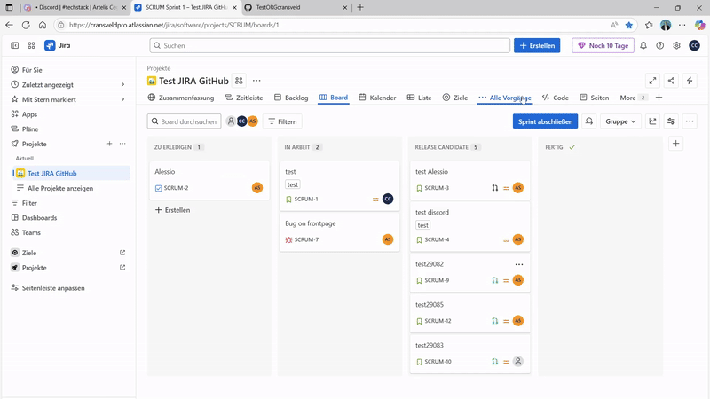
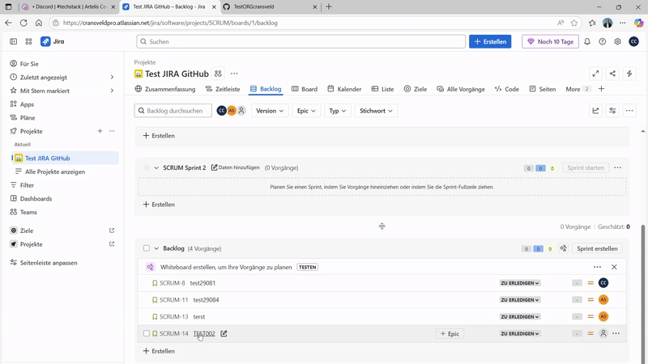
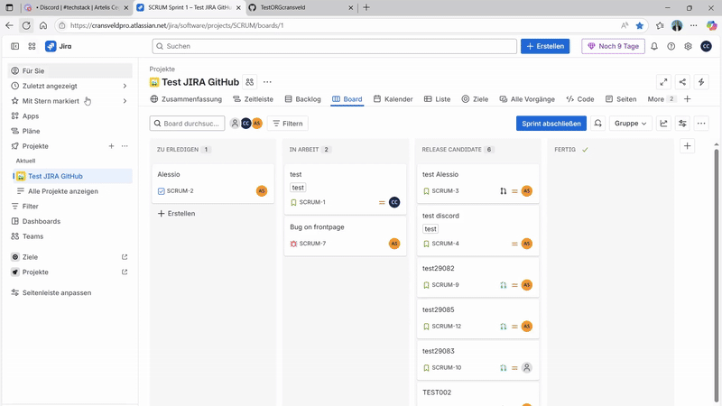

6
Creating a JIRA Ticket (Work Item)
A requirement comes from business for which a JIRA ticket is created (either by the Business User or by the Business Analyst)

💡 Note how TEST002, created as SCRUM-14 TEST002, first appears in the “Backlog” section for follow up.
The Business Analysts reviews the request, and if accepted, pushes the JIRA ticket to the chosen SPRINT.

💡 Note how changing the value to “SCRUM Sprint 1” puts the ticket in the “Board” section.
7
From JIRA to GitHub: development phase
A notification appears on Discord, in the dedicated “new issues” channel. A Developer can then simply click the link to JIRA and assign the ticket to himself.

💡 Note how a discord notification is sent when the ticket gets assigned to a developer.

‼️ AUTOMATICALLY a branch is created in GitHub, with the JIRA Ticket Number as the branch name. The developer can work on his code and push to the branch once a release candidate is ready.
The JIRA ticket will then change to “Release Candidate”.
8
Closing the Ticket
After validation, the JIRA Ticket is then closed, and with it the full Ticket cycle.
